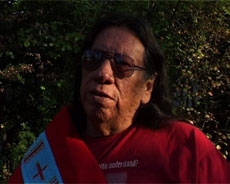

|
I'M A CROW - An Afternoon with Milo Yellow Hair
Simone Fürbringer | GER 2009 | 70 min.
Format: DV
Material: DigiBeta
Original language: English
Script: Simone Fürbringer, Nicolas Humbert
Camera: Nicolas Humbert
Sound: Nicolas Humbert
Editing: Simone Fürbringer
With Milo Yellow Hair
Production: SimNic Films
Print/Sales: SimNic Films
World Premiere
Author and activist Milo Yellow Hair (Oglala Lakota) is one of the most important intellectual voices of the American Indian resistance movement. Born in 1950 and raised on the Pine Ridge Reservation, he has dedicated himself to the struggle for the recognition and survival of indigenous cultures.
We spent an afternoon asking him questions on the theme of memory and cultural identity. Memories are not what has passed, but are the cutting edge between past and present. Never before has so much information been saved and forgotten at the same time. What happens when we lose the memory of our heritage? Is it preserved in collective memory and made accessible in the challenges of the future? – Simone Fürbringer
Simone Fürbringer, born in 1957 in Basel. She graduated in studies of pedagogy, and worked as a teacher, free lance journalist and photographer. In 1993 she graduated at the Munich Highschool for Television and Film and works since then as an independent film-maker. She lives and works in Munich.
Films: Flieg fliegender Fisch 1988 | Ong Dong Dreoka 1991 | Prends ta chance 1994 | Vagabonding Images 1998 | Farakan Heartbeat 2000 | Phönix aus der Asche 2002 | Lucie et maintenant 2007 | I'm a Crow - An Afternoon With Milo Yellow Hair 2009
back
|